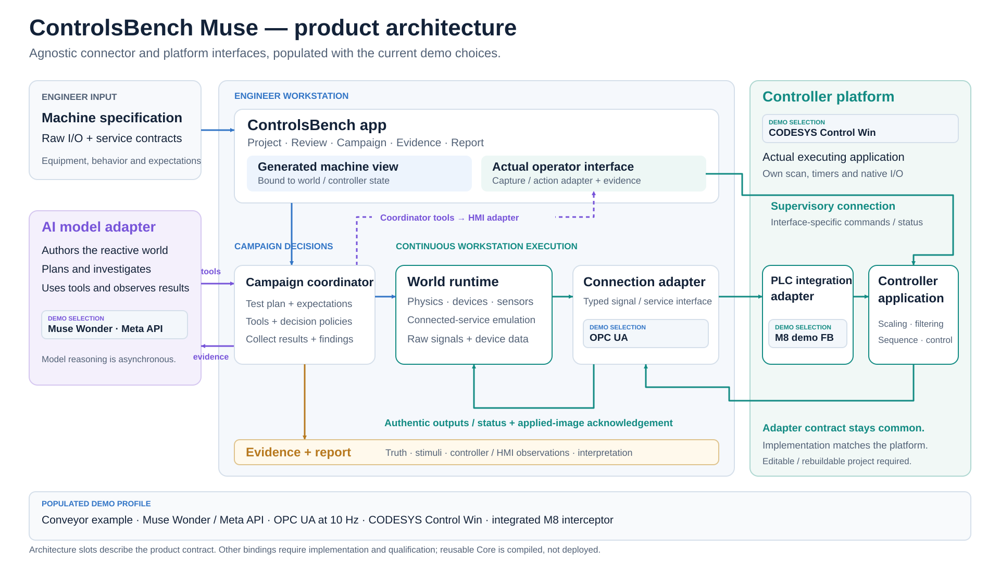
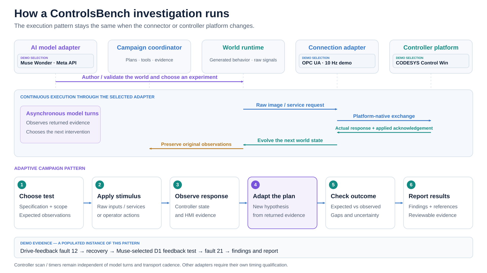
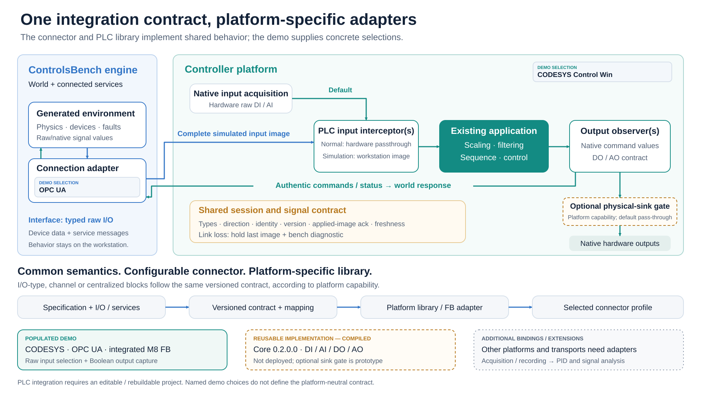

1. From specification to evidence
The main submission visual: Muse, the engineer workstation, and actual PLC application logic.

Submission diagrams: the product architecture, the demonstrated investigation loop, and the PLC integration path. Open an SVG for its full-resolution, editable version.
Capability labels: the live PLC fault/adaptive/report loop is demonstrated. Muse HMI operation passed a scoped live checkpoint; stale/disconnect coverage remains inconclusive. The reusable Core library is compiled but has not replaced the demo interceptor. Other vendor adapters and PID/signal-analysis extensions are future work.
The main submission visual: Muse, the engineer workstation, and actual PLC application logic.

The continuous I/O loop runs independently of Muse’s higher-level decisions.

Authentic PLC logic stays in the loop; shared contracts support platform-specific integration.
